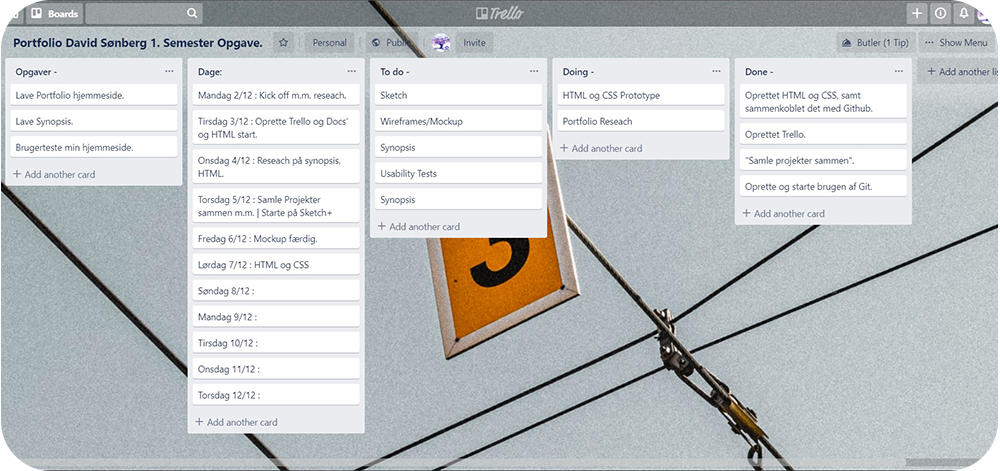

I mit eksamens projekt på 1. semester var den opgave jeg blev stillet, at udvikle og udarbejde et portfolio på mit webdomæne, som er alt du ser under "davidshjem.dk". Det skulle indeholde alle de projekter jeg har arbejdet med på 1. semester. Siden skulle også vise hvem jeg er som multimediedesigner og vise hvilke kompetencer jeg ligger inde med. Her under ses en kort visuel overgang over mange af de processer og programmer jeg har arbejdet med undervejs i portfolio projektet.
I starten af projektet oprettede jeg en Trello, som jeg også brugte som Kanban i forløbet og skulle hjælpe mig med, at holde overblik over mine mange opgaver samt hjælpe mig med at oprette en projektplan. Den hjalp mig rigtig meget og gjorde arbejdet mere overskueligt i længden.
Efter jeg havde været igennem en masse deskresearch, hvor jeg kiggede gennem en stor mængde allerede eksisterende, tilfældige valgte, multimediedesigners portfolioer valgte jeg at udarbejde skitser til min egen. Det gav mig en masse inspiration og jeg fik en bedre forståelse for opsætningen og indholdet, som en portfolio kunne indeholde. Her ses 2 af de sider jeg har valgt at vise, skitserede op, som lidt løse wireframes. “Udviklingen af min portfolio-siden og kontakt-siden.